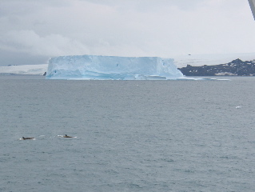
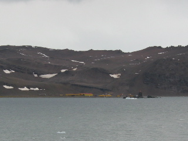
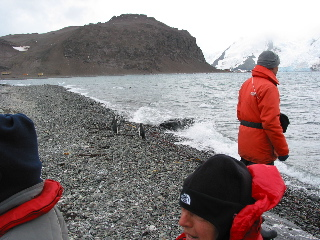
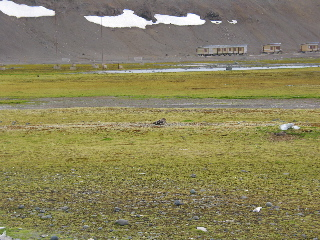

Day 3 &mdash 2003/01/27
We cruised through the Drake Passage, getting to the first of the Antarctic islands in a day and a half. After crossing the Convergence later last night, the weather got colder and more like winter, and the seas got calmer too. And we start seeing wildife in the water. As a side effect of this speed, we have our first landing today as well.
First landing: Arctowski Polish Research Base

The zodiacs are great fun. ^_^ You get wet. The water is
wavy and the zodiacs are very close to the water.
The research station was not that exciting to me. We didn't go into the lab parts, and thus were only in the commons. Which felt kinda like we were invading someone's living room, eventhough we were invited. (But then I've always been a bit weird in this.)
 The penguins were mostly fearless. They'd waddle right up to you. And seemed unfazed at all these people looking and taking pictures of them.

Also, this is one of the few places that had any green. And this is the last green we see for a while.